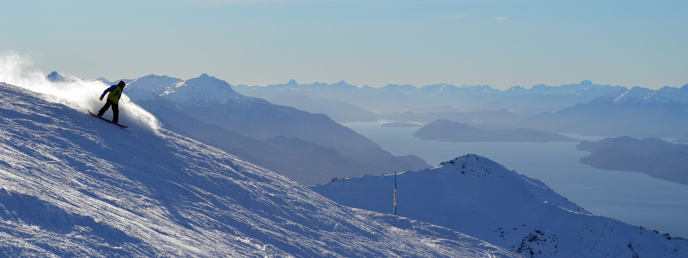

Este es el pie de la foto
Más información
Sobre San Carlos de Bariloche
Principales atracciones
El centro cívico fue diseñado por el arquitecto monumentalista Alfredo Bustillo y sus edificios de piedra verdosa son parte del principal atractivo de la ciudad.
El Parque Nacional Nahuel Huapi, cuya superficie es de 710.000 hectáreas, ofrece una gran variedad de paseos y actividades deportivas por bosques, lagos y montañas durante todo el año. Se puede navegar por los lagos, acampar, rafting, kayak, canotaje, excursiones en bicicleta, cabalgatas, esquí, buceo, escalada y trekking.
Las chocolaterías gozan de la mejor reputación en todo el país. Cada una ofrece su original gama de chocolates artesanales.
El Cerro Catedral es el centro de esquí más importante de Sudamérica. La temporada de esquí en Bariloche se extiende desde junio hasta septiembre.GastronomíaSan Carlos de Bariloche tiene una amplia oferta gastronómica y sus productos regionales más requeridos son cordero, trucha, hongos y ahumados. La ciudad también se distingue por sus cervezas y chocolates artesanales.
Principales atracciones
San Carlos de Bariloche tiene una amplia oferta gastronómica y sus productos regionales más requeridos son cordero, trucha, hongos y ahumados. La ciudad también se distingue por sus cervezas y chocolates artesanales.